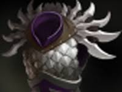
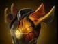

Berserker's Call
заставляет ближайших врагов атаковать Axe.

Хардлайн — позиция 3
мешать вражескому керри фармить, провоцировать врагов атаковать тебя и начинать драки, ловя сразу нескольких врагов.
быстро зачищай пачки крипов и безопасные лагеря. Ищи возможность поймать нескольких врагов сразу.
заставляет ближайших врагов атаковать Axe.
наносит постепенный урон и замедляет цель, пока не выполнится условие снятия эффекта.
Axe периодически отвечает круговой атакой на получаемые атаки.
добивает врага, если у него осталось достаточно мало здоровья, и при успешном добивании может дать бонусы команде.



